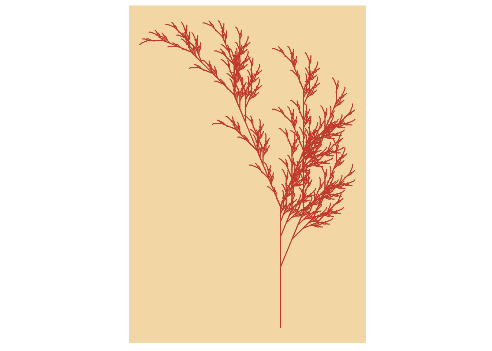
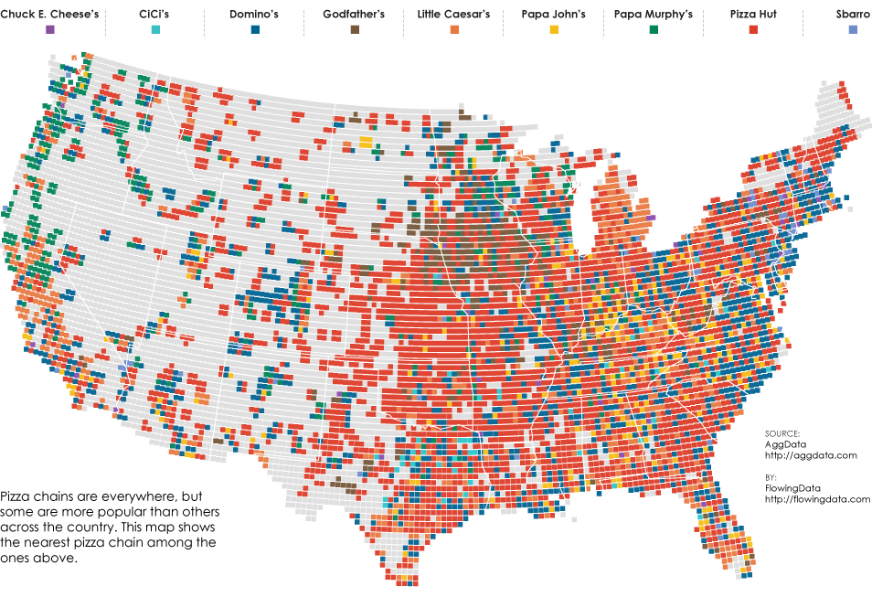

data(anscombe)ff <- y ~ xmods <-setNames(as.list(1:4), paste0("lm", 1:4))# Plot using for loopfor(i in1:4) { ff[2:3] <-lapply(paste0(c("y","x"), i), as.name)## or ff[[2]] <- as.name(paste0("y", i))## ff[[3]] <- as.name(paste0("x", i)) mods[[i]] <- lmi <-lm(ff, data = anscombe)#print(anova(lmi))}# Preparing for the plotsop <-par(mfrow =c(2, 2), mar =0.1+c(4,4,1,1), oma =c(0, 0, 2, 0))# Plot charts using for loopfor(i in1:4) { ff[2:3] <-lapply(paste0(c("y","x"), i), as.name)plot(ff, data = anscombe, col ="red", pch =21, bg ="orange", cex =1.2,xlim =c(3, 19), ylim =c(3, 13))abline(mods[[i]], col ="blue")}mtext("Anscombe's 4 Regression data sets", outer =TRUE, cex =1.5)
Q2) Generative Art
Generative Art is created using an autonomous system with a set of parameters or boundaries. AI generated art has gained popularity with recent developments in consumer AI programs. Programs like Midjourney and OpenAI’s DALL-E are two examples. You can give a prompt to these programs and they will generate artwork based on it. This is not the only example of generative art. Hans Haacke used a form of generative art with Condensation Cube. The process of the condensation forming on the inside of the cube is the autonomous creation of this type of generative art. Generative art can also come in the form of music. Brian Eno is a musician that pioneered generative music. He created an album called “Generative Music 1” with the use of SSEYO’s Koan generative music system.
NightCafe Art with the prompt “A Bob Ross painting in the style of Monet”
library(proto)library(tidyverse)axiom="X"rules=list("X"="F-[[X]+X]+F[+FX]-X", "F"="FF")angle=22.5depth=6for (i in1:depth) axiom=gsubfn(".", rules, axiom)actions=str_extract_all(axiom, "\\d*\\+|\\d*\\-|F|L|R|\\[|\\]|\\|") %>% unliststatus=data.frame(x=numeric(0), y=numeric(0), alfa=numeric(0))points=data.frame(x1 =0, y1 =0, x2 =NA, y2 =NA, alfa=90, depth=1)# Generating data# Note: may take a minute or twofor (action in actions){if (action=="F") { x=points[1, "x1"]+cos(points[1, "alfa"]*(pi/180)) y=points[1, "y1"]+sin(points[1, "alfa"]*(pi/180)) points[1,"x2"]=x points[1,"y2"]=ydata.frame(x1 = x, y1 = y, x2 =NA, y2 =NA,alfa=points[1, "alfa"],depth=points[1,"depth"]) %>%rbind(points)->points }if (action %in%c("+", "-")){ alfa=points[1, "alfa"] points[1, "alfa"]=eval(parse(text=paste0("alfa",action, angle))) }if(action=="["){data.frame(x=points[1, "x1"], y=points[1, "y1"], alfa=points[1, "alfa"]) %>%rbind(status) -> status points[1, "depth"]=points[1, "depth"]+1 }if(action=="]"){ depth=points[1, "depth"] points[-1,]->pointsdata.frame(x1=status[1, "x"], y1=status[1, "y"], x2=NA, y2=NA,alfa=status[1, "alfa"],depth=depth-1) %>%rbind(points) -> points status[-1,]->status }}ggplot() +geom_segment(aes(x = x1, y = y1, xend = x2, yend = y2),lineend ="round",color="tomato3", # Set your own Fall color?data=na.omit(points)) +coord_fixed(ratio =1) +theme(panel.background =element_rect(fill ="wheat"),panel.grid =element_blank(),axis.title =element_blank(),axis.ticks =element_blank(),axis.text =element_blank())

Q4) Chart Critique

This is a chart that shows the location of popular pizza chains throughout the United States. While the graph does show a lot of data, it struggles with showing that data clearly. The points on the map are very small and that makes it difficult to interpret. The color palette does not help with interpretation either. A palette that has higher contrast color scheme may help, but with the points being so small, it would be difficult. Finally, while most people have a decent understanding of the size and scale of the United States, the map is missing a scale.